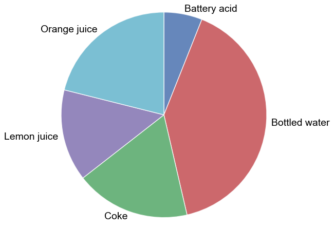

pie¶
- fcp.pie(**kwargs)¶
Pie chart
- Parameters
df (DataFrame) – DataFrame containing data to plot
- Keyword Arguments
x (str) – x-axis column name with categorical data [REQUIRED]
y (str) – y-axis column name with values [REQUIRED]
pie_colors|colors (str|list) – Wedge fill colors.
Defaults to fcp.DEFAULT_COLORS . More detailspie_counter_clock|counter_clock (bool) – Places wedges in a counter-clockwise fashion. Defaults to False. More details
pie_edge_color|edge_color (str) – Hex color string for the edge of the pie wedges. Defaults to #ffffff . More details
pie_edge_style|edge_style (str) – Line style for the wedge edge lines {‘-’, ‘–’, ‘-.’, ‘:’}. Defaults to ‘-’. More details
pie_edge_width|edge_width (float) – Width of the wedge edge lines in pixels. Defaults to 1. More details
pie_explode|explode (list of float) – Emphasize one or more wedges by offsetting it from the center of the pie by some amount. Defaults to None. More details
pie_fill_alpha|fill_alpha (float) – Transparency value for the bars between 0-1. Defaults to 0.85.
pie_font_color|font_color (str) – Font color for the wedge labels. Defaults to #444444 . More details
pie_font_size|font_size (float) – Font size for the wedge labels. Defaults to 11. More details
pie_font_weight|font_weight (str) – Font weight for the wedge labels {‘light’, ‘normal’, ‘medium’, ‘semibold’, ‘bold’, ‘heavy’, ‘black’}. Defaults to ‘normal’. More details
pie_inner_radius|inner_radius (float) – Distance from the center of the pie to the inner edge; used to make donut plots. Defaults to pie.html#donut. ils
pie_percents_distance|percents_distance (float) – Distance from center [0] to edge [pie_radius] at which percentage labels are placed. Defaults to 0.6. More details
pie_percents_font_color|percents_font_color (str) – Font color for the percentage labels. Defaults to #444444 . More details
pie_percents_font_size|percents_font_size (float) – Font size for the percentage labels. Defaults to 11. More details
pie_percents_font_weight|percents_font_weight (str) – Font weight for the percentage labels {‘light’, ‘normal’, ‘medium’, ‘semibold’, ‘bold’, ‘heavy’, ‘black’}. Defaults to ‘normal’. More details
pie_percents|percents (bool) – Label each pie wedge with the percentage for that category. Defaults to False. More details
pie_radius|radius (float) – Sets the radius of the pie chart. Defaults to 1. More details
pie_rotate_labels|rotate_labels (bool) – Rotate the pie labels to align with the bisection line from center of the pie through the wedge. Defaults to False. More details
pie_shadow|shadow (bool) – Add a shadow to give a 3D appearance to the pie chart. Defaults to False. More details
pie_start_angle|start_angle (float) – The angle at which the first wedge starts with [3 o’clock = 0; 12 o’clock =90; etc]. Defaults to 90. More details
Examples
>>> import fivecentplots as fcp >>> from pathlib import Path >>> import pandas as pd >>> df = pd.read_csv(Path(fcp.__file__).parent / 'test_data/fake_data_bar.csv') >>> df.loc[df.pH < 0, 'pH'] = -df.pH >>> fcp.pie(df, x='Liquid', y='pH', filter='Measurement=="A" & T [C]==25')
